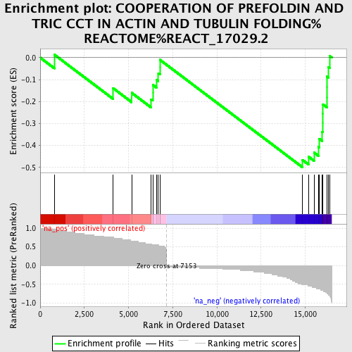
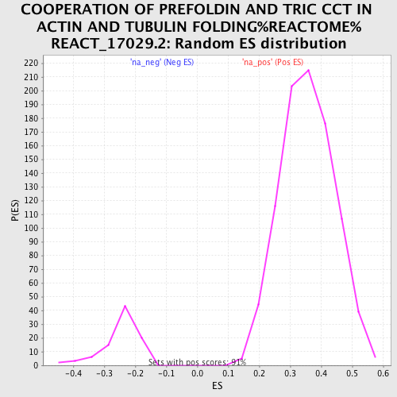

| | | Dataset | Adult_Pancreas |
| Phenotype | NoPhenotypeAvailable |
| Upregulated in class | na_neg |
| GeneSet | COOPERATION OF PREFOLDIN AND TRIC CCT IN ACTIN AND TUBULIN FOLDING%REACTOME%REACT_17029.2 |
| Enrichment Score (ES) | -0.49885425 |
| Normalized Enrichment Score (NES) | -1.993579 |
| Nominal p-value | 0.0 |
| FDR q-value | 0.027422864 |
| FWER p-Value | 0.208 |
Table: GSEA Results Summary

Fig 1: Enrichment plot: COOPERATION OF PREFOLDIN AND TRIC CCT IN ACTIN AND TUBULIN FOLDING%REACTOME%REACT_17029.2
Profile of the Running ES Score & Positions of GeneSet Members on the Rank Ordered List
| PROBE | GENE SYMBOL | GENE_TITLE | RANK IN GENE LIST | RANK METRIC SCORE | RUNNING ES | CORE ENRICHMENT | | 1 | PFDN1 | | | 799 | 0.966 | 0.0139 | No |
| 2 | VBP1 | | | 4119 | 0.759 | -0.1386 | No |
| 3 | CCT7 | | | 5175 | 0.655 | -0.1603 | No |
| 4 | TCP1 | | | 6284 | 0.586 | -0.1896 | No |
| 5 | CCT3 | | | 6371 | 0.552 | -0.1592 | No |
| 6 | CCT5 | | | 6372 | 0.552 | -0.1236 | No |
| 7 | PFDN6 | | | 6575 | 0.552 | -0.1002 | No |
| 8 | TUBB1 | | | 6688 | 0.552 | -0.0714 | No |
| 9 | CCT2 | | | 6773 | 0.517 | -0.0431 | No |
| 10 | CCT8 | | | 6774 | 0.517 | -0.0097 | No |
| 11 | CCT4 | | | 14836 | -0.517 | -0.4654 | Yes |
| 12 | CCT6A | | | 15179 | -0.552 | -0.4506 | Yes |
| 13 | PFDN2 | | | 15497 | -0.586 | -0.4319 | Yes |
| 14 | PFDN5 | | | 15747 | -0.621 | -0.4070 | Yes |
| 15 | TUBB6 | | | 15794 | -0.621 | -0.3697 | Yes |
| 16 | PFDN4 | | | 15956 | -0.655 | -0.3371 | Yes |
| 17 | TUBB2A | | | 15989 | -0.655 | -0.2967 | Yes |
| 18 | TUBB2B | | | 15990 | -0.655 | -0.2544 | Yes |
| 19 | TUBB3 | | | 15992 | -0.655 | -0.2122 | Yes |
| 20 | TUBA1A | | | 16235 | -0.724 | -0.1801 | Yes |
| 21 | TUBA1B | | | 16236 | -0.724 | -0.1333 | Yes |
| 22 | TUBA4A | | | 16237 | -0.724 | -0.0865 | Yes |
| 23 | TUBA1C | | | 16314 | -0.759 | -0.0422 | Yes |
| 24 | ACTB | | | 16375 | -0.828 | 0.0076 | Yes |
Table: GSEA details [plain text format]

Fig 2: COOPERATION OF PREFOLDIN AND TRIC CCT IN ACTIN AND TUBULIN FOLDING%REACTOME%REACT_17029.2: Random ES distribution
Gene set null distribution of ES for COOPERATION OF PREFOLDIN AND TRIC CCT IN ACTIN AND TUBULIN FOLDING%REACTOME%REACT_17029.2